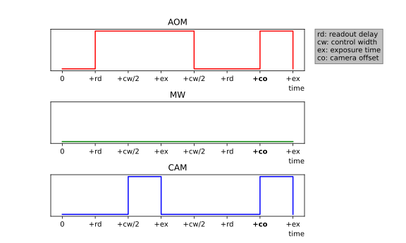
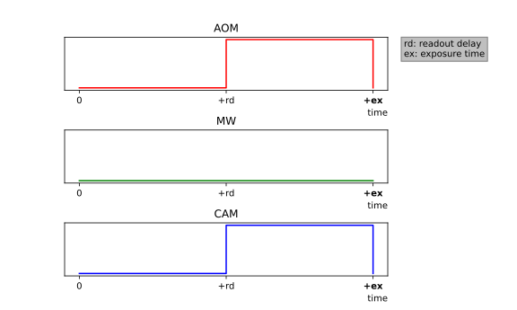
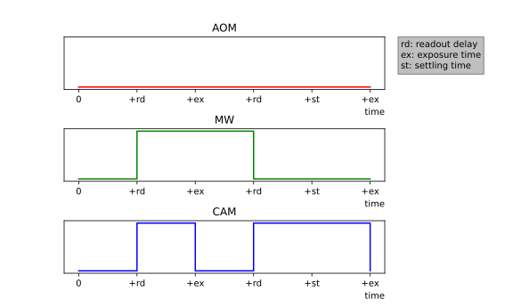
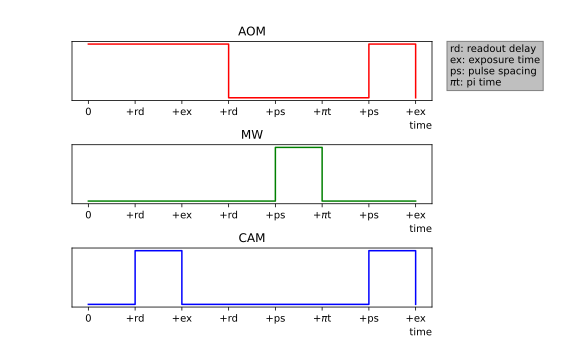
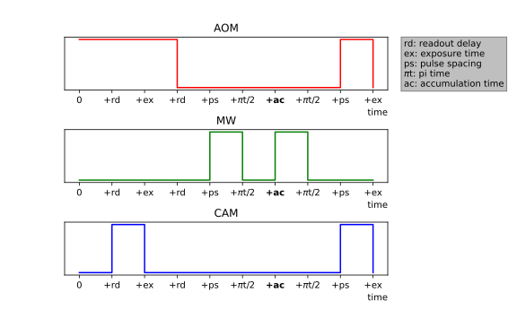

📁 experiments#
Definitions for specific experimental procedures.
Each class represents a specific type of experiment which is executed on the quantum diamond microscope apparatus.
- class PyQSense.experiments.Sweep_Experiment(sweep_params, sweep_func, n_samples, sample_frames, n_runs=None, batch_size=None, total_time=None, batch_time=None)#
Bases:
objectAn experiment which “sweeps” a range of values.
- __init__(sweep_params, sweep_func, n_samples, sample_frames, n_runs=None, batch_size=None, total_time=None, batch_time=None)#
- Parameters:
sweep_params (numpy.ndarray) – The array of parameters to sweep over. This is specific to the experiment, and is specified in subclasses.
sweep_func (function) – The function to be called for each point in the sweep.
n_samples (int) – The number of image samples to be taken for each run. A sample is a collection of raw images taken in succession (see
PyQSense.cam_control.BaslerCamera.run_acquisition()).sample_frames (int) – The number of raw images taken per sample.
n_runs (int | None) – The number of repetitions (runs) for the experiment.
batch_size (float | None) – The size of the batch, relative to a run. The size of one batch is given by dividing the size of the sweep parameters by this number. For example, a
batch_sizeof 3 results in a batch being ⅓ of a run.total_time (float | None)
batch_time (float | None)
- sweep_params#
- Type:
numpy.ndarray
- n_samples#
- Type:
int
- sample_frames#
- Type:
int
- run_position#
Indicates which run and sweep parameter are currently being executed. The first element is the run number, and the second element is the index of the current sweep parameter being tested.
- Type:
tuple[int]
- stop_event#
An integer flag in {-1,0,1,2,3}. The flag is set by certain methods designed to stop the experiment. The meanings of the flags are as follows:
- -1
When set, the program flow diverts to a sleep-loop, breaking when the flag is not -1.
- 0
Set by
PyQSense.experiments.Sweep_Experiment.start(); it indicates that the experiment is running.- 1
When set, signals to terminate the current experiment, while still finishing the current run.
- 2
When set, signals to terminate the current experiment as soon as possible (i.e. without finishing the run).
- 3
Set by
PyQSense.experiments.Sweep_Experiment.start()right before it terminates.
- Type:
int
- data_lock#
Lock object from python’s threading module.
- Type:
threading.Lock
- n_runs#
- Type:
int
- batch_size#
- Type:
float
- last_images#
Array of shape \((n,s,w,h)\) with
- \(n\)
The number of runs divided by the batch size (rounded to the next highest integer)
- \(s\)
The number of sweep parameters, given by
len(self.sweepParams).- \(w\)
Width of the camera image, obtained from the GenICam parameter “Width”.
- \(h\)
Height of the camera image, obtained from the GenICam parameter “Height”.
Conceptually, this is a data structure which indexes images by batch and sweep parameter.
- Type:
numpy.ndarray
- start(blocking=True)#
Start the experiment.
- Parameters:
blocking (bool) – Whether to block the main thread until the experiment is finished.
- stop(finish_run=True)#
Stop the current run.
- Parameters:
finish_run (bool) – Whether to let the current run finish, defaults to true.
- pause(state=True)#
Pause the experiment.
- class PyQSense.experiments.Stability_Test(exposure_time, n_points, **exp_config)#
Bases:
Sweep_Experiment- __init__(exposure_time, n_points, **exp_config)#
- Parameters:
sweep_params (numpy.ndarray) – The array of parameters to sweep over. This is specific to the experiment, and is specified in subclasses.
sweep_func (function) – The function to be called for each point in the sweep.
n_samples (int) – The number of image samples to be taken for each run. A sample is a collection of raw images taken in succession (see
PyQSense.cam_control.BaslerCamera.run_acquisition()).sample_frames (int) – The number of raw images taken per sample.
n_runs (int | None) – The number of repetitions (runs) for the experiment.
batch_size (float | None) – The size of the batch, relative to a run. The size of one batch is given by dividing the size of the sweep parameters by this number. For example, a
batch_sizeof 3 results in a batch being ⅓ of a run.total_time (float | None)
batch_time (float | None)
- get_sequence()#
Compute the TTL pulse sequence for a specific exposure offset.

- Returns:
a triple of
PyQSense.ttl_control.ttl_sequence()objects which are pulse configurations for the acousto-optic modulator, camera, and a control configuration, in that order.- Return type:
- class PyQSense.experiments.Camera_Offset_Calibration(offsets, control_width, exposure_time, **exp_config)#
Bases:
Sweep_ExperimentCamera calibration.
This experiment is used to determine the camera’s trigger and pulse width offsets. To do this, it sweeps an exposure pulse across an equally sized AOM pulse. A properly calibrated camera will show a triangular function, coming to a point at 0 offset. If the shape is trapezoidal, the width of the plateau is the width offset. If the point, or falling edge of the shape is not at 0, the distance from 0 is equal to the trigger offset.
- __init__(offsets, control_width, exposure_time, **exp_config)#
- Parameters:
offsets (numpy.ndarray) – The array of exposure offsets to sweep over.
control_width (float) – The additional width added to the control AOM pulse.
exposure_time (float) – The readout time for camera exposures.
n_runs (int)
n_samples (int)
batch_size (float)
- control_width#
- Type:
float
- exposure_time#
- Type:
float
- get_sequence()#
Compute the TTL pulse sequence for a specific exposure offset.
- Returns:
a triple of
PyQSense.ttl_control.ttl_sequence()objects which are pulse configurations for the acousto-optic modulator, camera, and a control configuration, in that order.- Return type:
- class PyQSense.experiments.Exposure_Calibration(exposure_times, **exp_config)#
Bases:
Sweep_ExperimentExposure time calibration experiment class. This experiment is used to determine the optimal exposure time for the camera. To do this, it sweeps across a range of exposure times and captures images at each point.
- __init__(exposure_times, **exp_config)#
- Parameters:
exposure_times (numpy.ndarray) – Array of different exposure times to test.
n_runs (int)
n_samples (int)
batch_size (float)
- get_sequence()#
Compute the TTL pulse sequence for each experiment run.

- Returns:
a triple of
PyQSense.ttl_control.ttl_sequence()objects which are pulse configurations for the acousto-optic modulator, camera, and a control configuration, in that order.- Return type:
- class PyQSense.experiments.Gain_Calibration(gain_values, exposure_time, **exp_config)#
Bases:
Sweep_ExperimentTODO:DOC
- __init__(gain_values, exposure_time, **exp_config)#
- Parameters:
gain_values (numpy.ndarray) – Array of camera gain values to sweep over.
exposure_time (float) – The readout time for camera exposures.
n_runs (int)
n_samples (int)
batch_size (float)
- exposure_time#
- Type:
float
- get_sequence()#
Compute the TTL pulse sequence for each experiment run.
- class PyQSense.experiments.Continuous_Wave_ODMR(frequencies, exposure_time, settling_time, **exp_config)#
Bases:
Sweep_ExperimentContinuous wave ODMR experiment.
This experiment sweeps across a range of microwave frequencies, taking an exposure at each point both with and without the microwave signal present. By dividing the two images and plotting over the frequency, we attain an ODMR spectrum.
- __init__(frequencies, exposure_time, settling_time, **exp_config)#
- Parameters:
frequencies (numpy.ndarray) – The array of microwave frequencies to sweep over.
exposure_time (float) – The readout time for camera exposures.
settline_time (float)
- exp_config#
- Type:
float
- get_sequence()#
Compute the TTL pulse sequence for each experiment run.

- Returns:
The TTL pulse configurations of the acousto-optic modulator, microwave generator, camera, and camera burst start, in that order.
- Return type:
- class PyQSense.experiments.Rabi_Oscillation(pulse_widths, mw_freq, exposure_time, pulse_spacing, **exp_config)#
Bases:
Sweep_ExperimentRabi Oscillation experiment.
This experiment first runs an AOM pulse to initialize the state of the NVs. A control image is taken during this time. Then a microwave pulse is applied to perturb the state and another image is taken. The images are then divided to show the effect of the microwave pulse. By sweeping the length of the MW pulse applied we should be able to see oscillations in the NV state. This can then be used to determine the Rabi frequency and pi time of the system.
- __init__(pulse_widths, mw_freq, exposure_time, pulse_spacing, **exp_config)#
- Parameters:
pulse_widths (numpy.ndarray) – The array of microwave pulse widths to sweep over.
mw_freq (float) – The microwave frequency used during the experiment.
exposure_time (float) – The exposure time.
pulse_spacing (float) – The spacing between AOM and MW pulses.
n_runs (int) – The number of full sweeps to run.
n_samples (int) – The number of samples per sweep point.
batch_size (float)
- mw_freq#
- Type:
float
- exposure_time#
- Type:
float
- pulse_spacing#
- Type:
float
- get_sequence()#
Compute the TTL pulse sequence for each experiment run.
- Parameters:
pulse_width (float) – The width of the MW pulse.
- Returns:
The AOM TTL pulse configuration. mw_channel (ttl_channel): The microwave TTL pulse configuration. cam_channel (ttl_channel): The camera TTL pulse configuration. ctrl_channel (ttl_channel): The camera burst start TTL pulse configuration.
- Return type:
aom_channel (ttl_channel)
- class PyQSense.experiments.Pulsed_ODMR(frequencies, pi_time, exposure_time, pulse_spacing, **exp_config)#
Bases:
Sweep_ExperimentPulsed ODMR experiment.
This experiment first runs an AOM pulse to initialize the state of the NVs. A control image is taken during this time. Then a microwave \(pi\) pulse is applied to perturb the state and another image is taken. The images are then divided to show the effect of the microwave pulse. By sweeping the frequency of the MW pulse applied we attain an ODMR spectrum.
- __init__(frequencies, pi_time, exposure_time, pulse_spacing, **exp_config)#
- Parameters:
frequencies (numpy.ndarray) – The array of microwave frequencies to sweep over.
pi_time (float) – The duration of the \(pi\) pulse.
init_time (float) – The duration of the initialization time.
exposure_time (float) – The duration of the exposure time.
pulse_spacing (float) – The duration between pulses.
n_runs (int)
n_samples (int)
- get_sequence()#
Compute the TTL pulse sequence for each experiment run.
A “schedule” of pulse signals sent to each device:

- Returns:
a list of
PyQSense.ttl_control.ttl_sequence()objects which are pulse configurations for the acousto-optic modulator, microwave generator, camera, and a control configuration, in that order.- Return type:
- class PyQSense.experiments.Ramsey(accum_times, mw_freq, pi_time, exposure_time, pulse_spacing, **exp_config)#
Bases:
Sweep_ExperimentRamsey magnetometry experiment.
This experiment first runs an AOM pulse to initialize the state of the NVs. A control image is taken during this time. Then a microwave pi pulse is applied to perturb the state and another image is taken. The images are then divided to show the effect of the microwave pulse. By sweeping the frequency of the MW pulse applied we attain an ODMR spectrum.
- __init__(accum_times, mw_freq, pi_time, exposure_time, pulse_spacing, **exp_config)#
TODO:DOC
- Parameters:
() (exp_config)
()
()
()
()
()
- get_sequence()#

Compute the TTL pulse sequence for each experiment run.
- Parameters:
pulse_width (float) – The width of the MW pulse.
- Returns:
The AOM TTL pulse configuration. mw_channel (ttl_channel): The microwave TTL pulse configuration. cam_channel (ttl_channel): The camera TTL pulse configuration. ctrl_channel (ttl_channel): The camera burst start TTL pulse configuration.
- Return type:
aom_channel (ttl_channel)